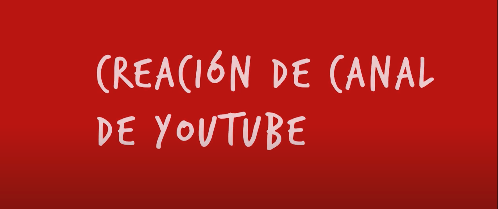
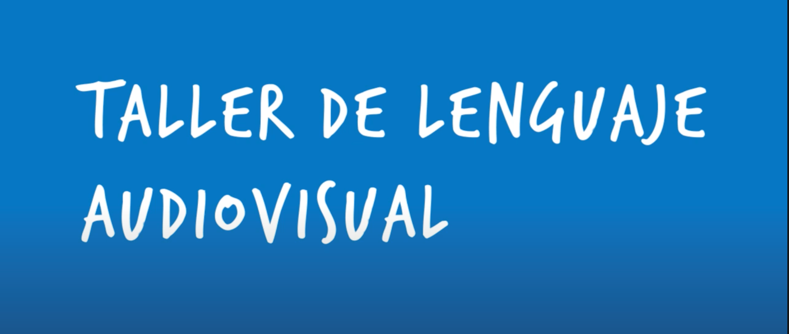
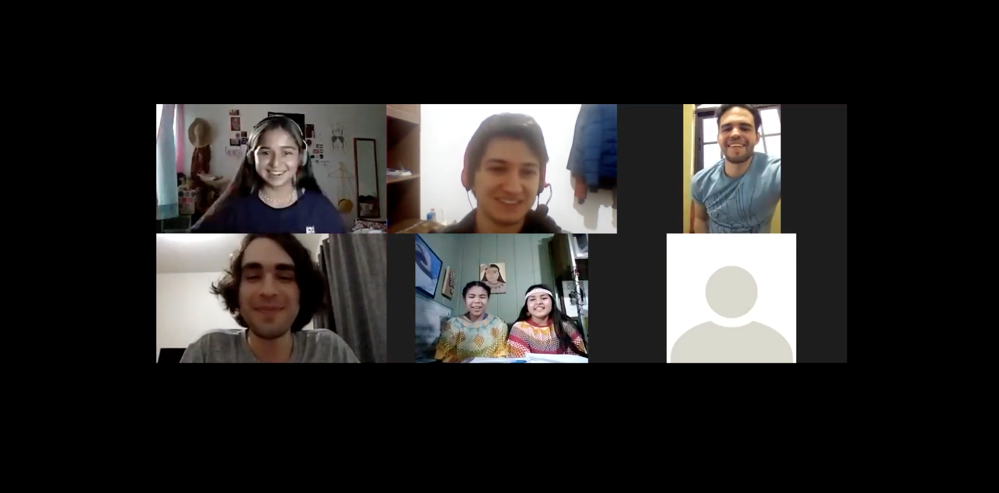
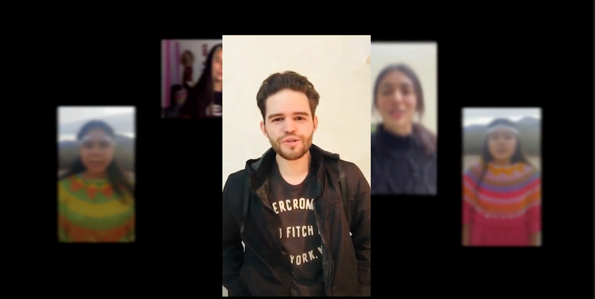
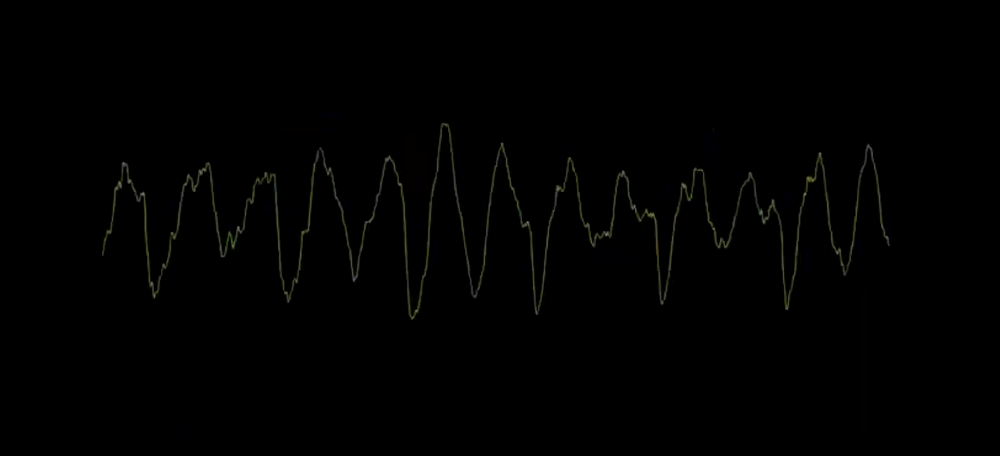
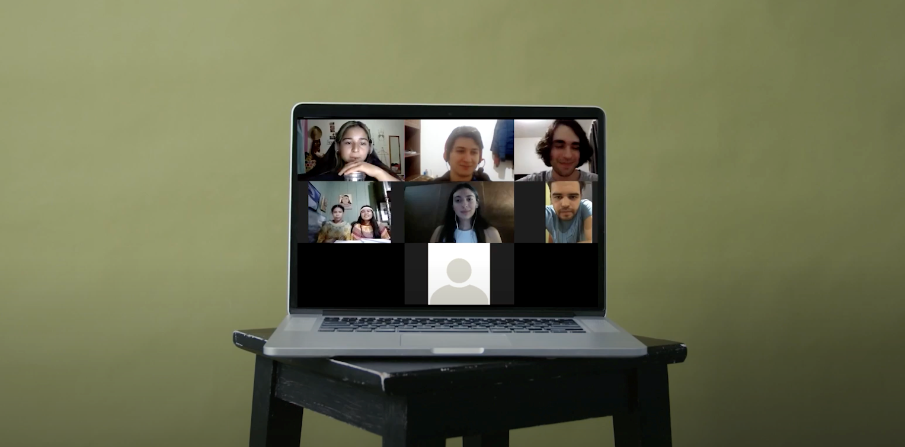
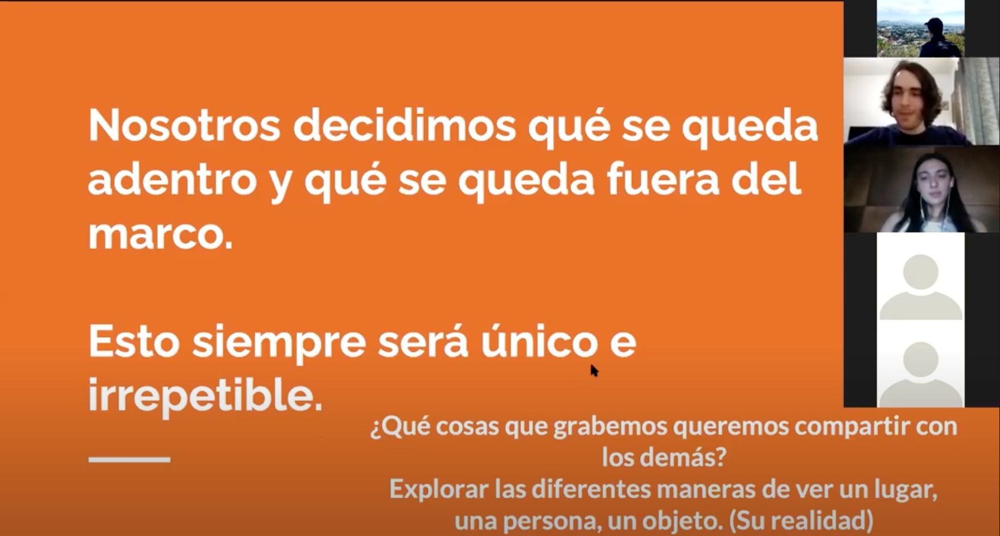

<ng-template #content let-c="close" let-d="dismiss" let-modal>
    <div class="modal-content">
        <div class="modal-body">
            <iframe [src]="currlink" title="YouTube video player" frameborder="0" allow="accelerometer; autoplay; clipboard-write; encrypted-media; gyroscope; picture-in-picture" allowfullscreen></iframe>
            <button id="x-btn" type="button" class="close" aria-label="Close" (click)="closeModal()">X</button>
        </div>
    </div>
</ng-template>

<div class="container">
    <div class="row">
        <button class="second" [disabled]="!stages[1]" (click)="openModalWithVideo(1)"></button>
        <button class="middle" [disabled]="!stages[2]" (click)="openModalWithVideo(3)"></button>
        <button class="middle" [disabled]="!stages[3]" (click)="openModalWithVideo(5)"></button>
    </div>
    <div class="row">
        <button [disabled]="!stages[0]" (click)="openModalWithVideo(0)"></button>
        <button class="last" [disabled]="!stages[4]" (click)="openModalWithVideo(7)"></button>
    </div>
    <div class="row">
        <button class="second" [disabled]="!stages[1]" (click)="openModalWithVideo(2)"></button>
        <button class="middle" [disabled]="!stages[2]" (click)="openModalWithVideo(4)"></button>
        <button class="middle" [disabled]="!stages[3]" (click)="openModalWithVideo(6)"></button>
    </div>
</div>